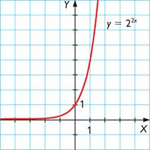
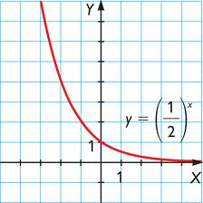

Funciones elementales
Funciones exponenciales
Una función exponencial es la que tiene la variable en el exponente de una potencia:

Su dominio es R y su recorrido (0,∞), y no es simétrica. Es decreciente si 0 < a < 1, y creciente si a > 1, en su dominio. No tiene extremos. Su gráfica siempre pasa por (0,1).
Ejemplos:
Ejercicio. Dibuja la gráfica de estas funciones:
a) f(x) = 22x
b) f(x) = 2-x
Soluciones:
a) 
b) 
Obra publicada con Licencia Creative Commons Reconocimiento No comercial Compartir igual 4.0